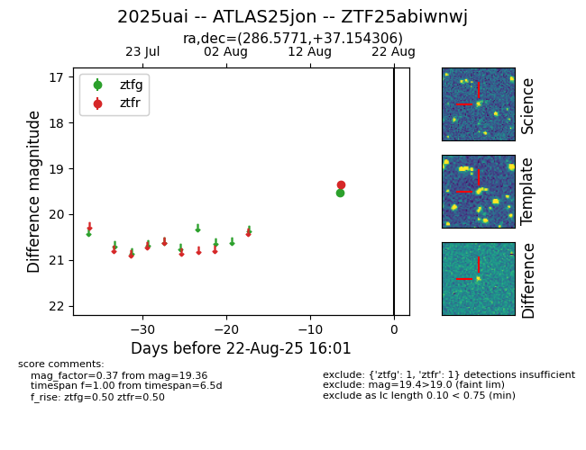

Target 2025uai at 2025-08-22 16:01, see:
FINK: fink-portal.org/ZTF25abiwnwj
Lasair: lasair-ztf.lsst.ac.uk/objects/ZTF25abiwnwj
ALeRCE: alerce.online/object/ZTF25abiwnwj
TNS: wis-tns.org/object/2025uai
YSE: ziggy.ucolick.org/yse/transient_detail/2025uai
alt names
ZTF25abiwnwj (ztf,alerce)
2025uai (tns,yse)
ATLAS25jon (atlas)
coordinates:
equatorial (ra, dec) = (286.5771,+37.15431)
galactic (l, b) = (68.1337,+13.26206)
photometry
last ztfg=19.53, ztfr=19.36
1 ztfg, 1 ztfr detections
